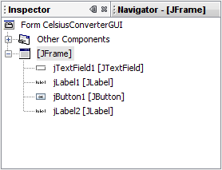

Adding the Application Logic
Step 1: Change the Default Variable Names
The figure below shows the default variable names as they currently appear within the Inspector. For each component, the variable name appears first, followed by the object's type in square brackets. For example,jTextField1 [JTextField]
means that "jTextField1" is the variable name
and "JTextField" is its type.

Default Variable Names

New Variable Names
Step 2: Register the Event Listeners
When an end-user interacts with a Swing GUI component (such as clicking the Convert button), that component will generate a special kind of object — called an event object — which it will then broadcast to any other objects that have previously registered themselves as listeners for that event. The NetBeans IDE makes event listener registration extremely simple:

This figure has been reduced to fit on the page.
Click the image to view it at its natural size.
In the Design Area, click on the Convert button to select it. Make sure that only the Convert button is selected (if the JFrame itself is also selected, this step will not work.) Right-click the Convert button and choose Events -> Action -> ActionPerformed. This will generate the required event-handling code, leaving you with empty method bodies in which to add your own functionality:

This figure has been reduced to fit on the page.
Click the image to view it at its natural size.
There are many different event types representing the various kinds of actions that an end-user can take (clicking the mouse triggers one type of event, typing at the keyboard triggers another, moving the mouse yet another, and so on.) Our application is only concerned with the ActionEvent; for more information about event handling, see Writing Event Listeners.
Step 3: Add the Temperature Conversion Code
The final step is to simply paste the temperature conversion code into the empty method body. The following code is all that is necessary to convert a temperature from Celsius to Fahrenheit:Note: This example is not localizable because the
parseDouble
method is not localizable. This code snippet is for illustration purposes only.
A more robust implementation would use the
Scanner class to parse the user input.
//Parse degrees Celsius as a double and convert to Fahrenheit.
int tempFahr = (int)((Double.parseDouble(tempTextField.getText()))
* 1.8 + 32);
fahrenheitLabel.setText(tempFahr + " Fahrenheit");
This figure has been reduced to fit on the page.
Click the image to view it at its natural size.
Step 4: Run the Application
Running the application is simply a matter of choosing Run -> Run Main Project within the NetBeans IDE. The first time you run this application, you will be prompted with a dialog asking to setCelsiusConverterGUI as the main class for this project. Click the OK button,
and when the program finishes compiling, you should see the application running in
its own window.
Congratulations! You have completed your first Swing application!